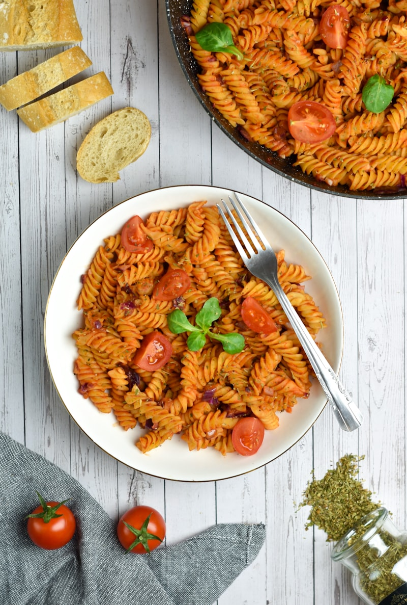

Comfort Food Rooted in Tradition & Community
Tucked right at the Church Street archway into historic Brevard Court, French Quarter Restaurant delivers an unpretentious, high-flavor pub experience. We have been a steadfast gathering place for Uptown workers, neighborhood regulars, and sports crowds for decades.
From our dark roux Louisiana seafood and chicken gumbo to the spiced Cajun Chicken Alfredo, every recipe is crafted in-house to deliver unmistakable depth and generous portions.

Signature Offerings

Salt & Pepper Wings
$15.95Our iconic jumbo wings fried extra crisp and tossed in house salt and crushed pepper blend with sliced jalapenos and celery.
Charlotte Legend
Cajun Chicken Pasta
$17.50Tender blackened chicken breast strips tossed with penne pasta in a spicy garlic Parmesan cream sauce with sweet bell peppers.
House Favorite
The Monte Cristo
$14.95Sliced smoked ham, roast turkey, and Swiss cheese on thick French toast, griddled golden and dusted with powdered sugar with raspberry preserves.
Lunch Classic